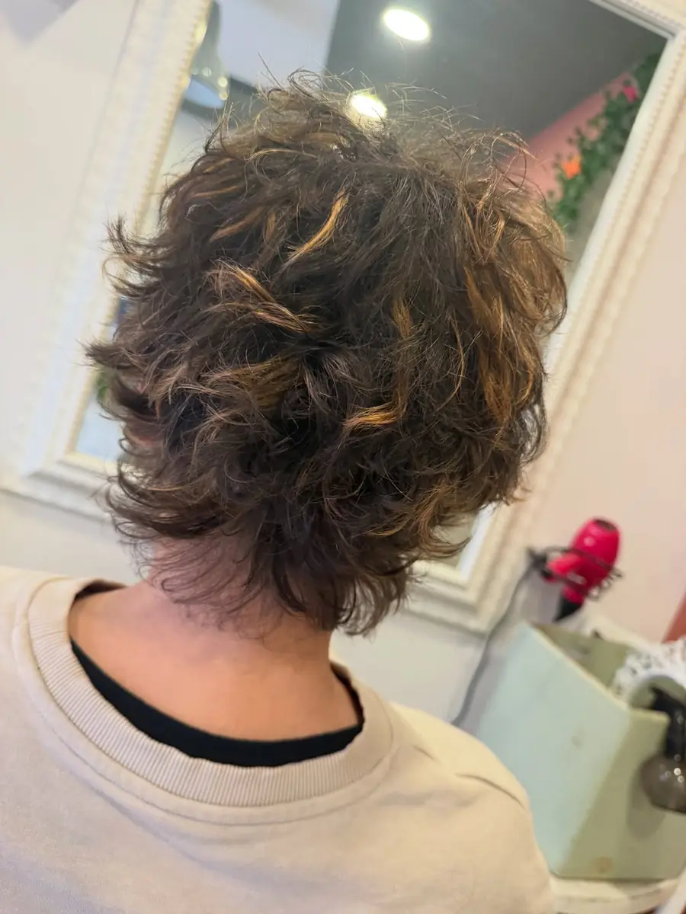
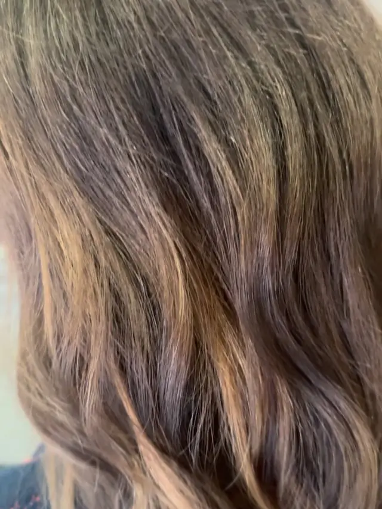
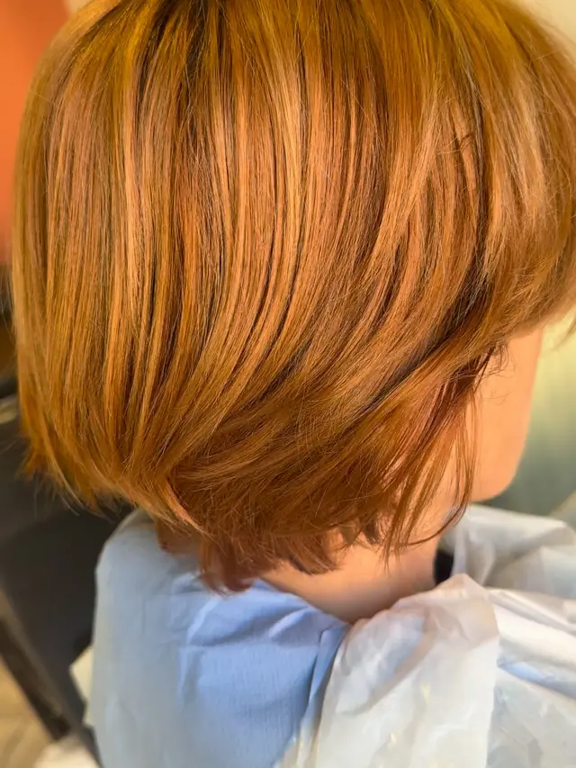
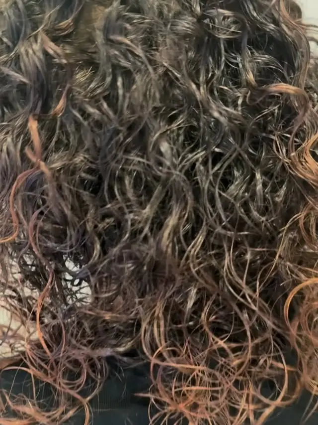
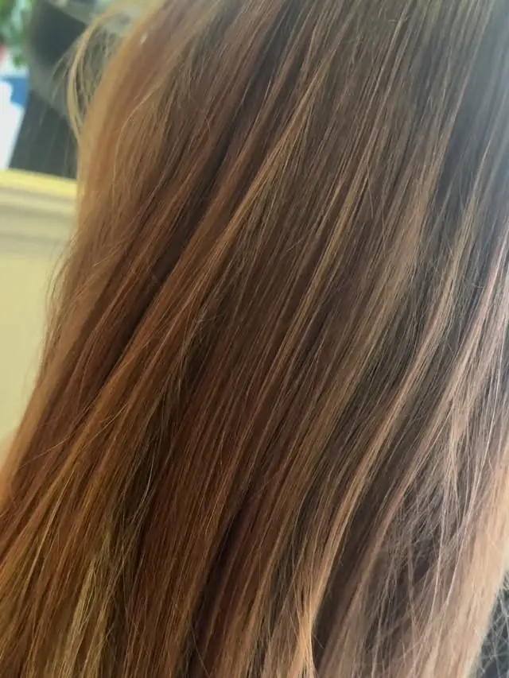
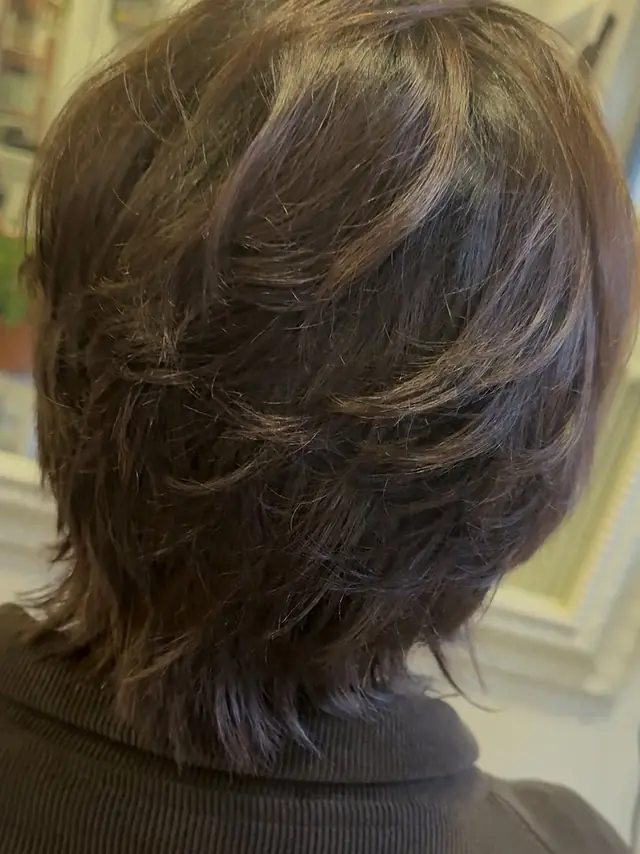
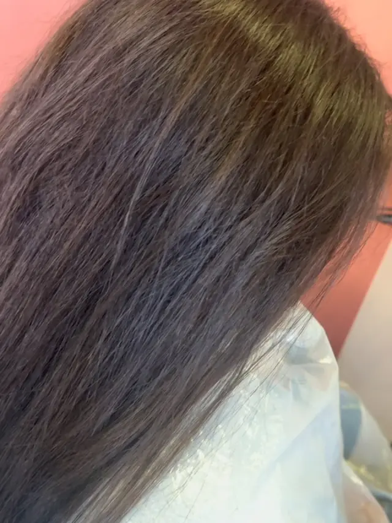

Colore
Balayage, babylights, schiariture, rame, borgogna. Costruiamo il colore su misura, anche quando vuoi cambiare in modo elegante senza diventare bionda.
Proposta di Insegna per Acconciature Mariposa: non è il sito ufficiale dell'attività
Siamo un salone per donna e uomo a Dossobuono. Colore, tagli, ricci e trattamenti, con l'atmosfera di casa. Il mercoledì restiamo aperti fino alle 20.

Balayage, babylights, schiariture, rame, borgogna. Costruiamo il colore su misura, anche quando vuoi cambiare in modo elegante senza diventare bionda.
Scalati, caschetti, corti e mossi, per lei e per lui. A volte basta il taglio giusto: niente colore, solo forma e movimento.
La pizzicata, per ricci definiti che durano giorni. E la stiratura Keyliss di Emsibeth, per salutare crespo, onde indesiderate e piastra.
Trattamenti aromaterapici a base di oli essenziali per cute e capelli, personalizzati e nel rispetto della tua pelle. Un momento di benessere tutto tuo.
Lavori pubblicati sul nostro Instagram a novembre 2026.






Grazie a chi ha scritto di noi. Ecco alcune recensioni, con le vostre parole.
Personale gentilissimo ed educato, atmosfera familiare in un contesto molto professionale. I tempi di appuntamento e acconciatura sono sempre rispettati e la titolare una persona di una dolcezza e sensibilità disarmanti ha sempre il consiglio adatto alla persona che si affida alle sue mani d'oro.
Mariagrazia è una parrucchiera eccezionale: cordiale, disponibile e sempre pronta a mettere a proprio agio le clienti con il suo sorriso e la sua gentilezza.
Avevo chiesto un’acconciatura particolare per un matrimonio e sono stata molto soddisfatta, ha tenuto dalla mattina fino a tarda sera, perfettamente.
Appena entri trovi atmosfera e calore come essere in una accogliente famiglia.
Sono rimasta soddisfatta sia del taglio che dei giochi di colori che avete creato!
Orari di apertura
| Martedì | 9:00 – 17:30 |
|---|---|
| Mercoledì | 12:00 – 20:00 |
| Giovedì | 9:00 – 17:30 |
| Venerdì | 9:00 – 17:30 |
| Sabato | 9:00 – 17:30 |
| Domenica | Chiuso |
| Lunedì | Chiuso |
Il mercoledì apriamo a mezzogiorno e restiamo fino alle 20: comodo se lavori tutto il giorno.